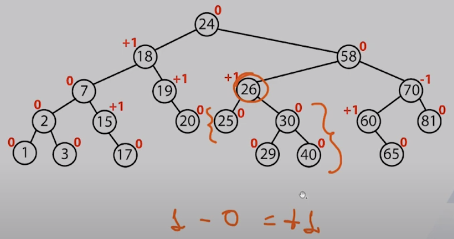
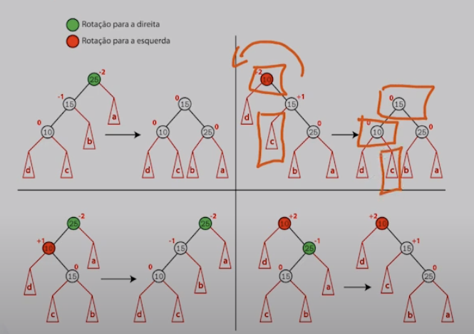
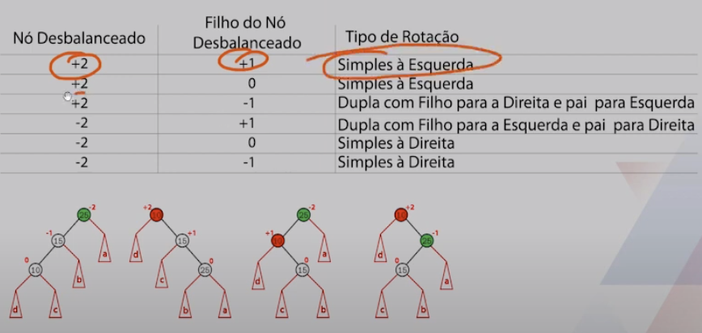
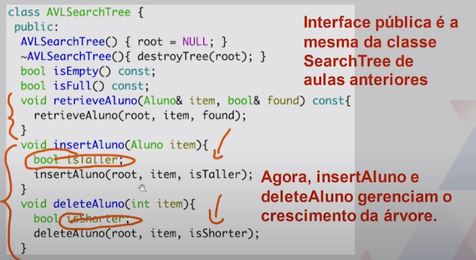
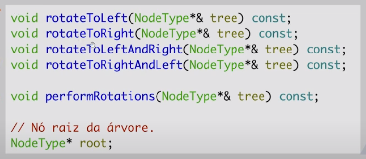
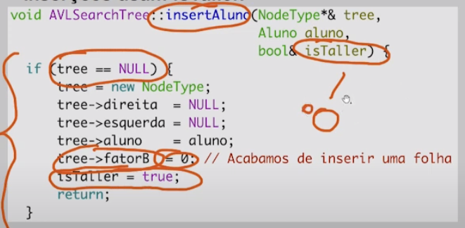
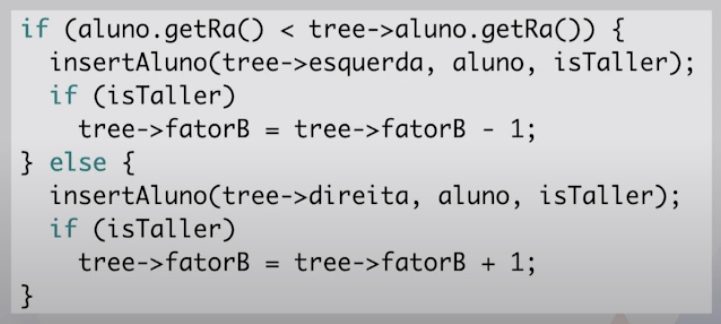
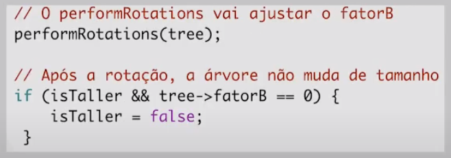

Disciplinas
-
ESTRUTURA DE DADOS-T01-2024-1 Concluído
Materiais
Vídeo 2 - *Estruturas de Dados - Árvores AVL. sendProf° ministrante: Dr. Jonathan de Andrade Silva.
Conteúdo
Árvores AVL.
- Roteiro:
- Conceitos Básicos.
- Estrutura do Nó.
- Tipo Abstrato de Dados.
- Detalhes de Implementação.
Árvores AVL
- Nos algoritmos de busca, inserção e remoção, no pior caso, o número de comparações é proporcional à altura da árvore:
- As buscas são eficientes em árvores balanceadas.
- Em árvores degeneradas, as operações deixam de ser eficientes.
- Número de Elementos: 5
- Número Máximo de Comparações: 5
Conceitos Básicos.
- Fator de balanceamento: é a diferença de altura entre as subárvores da direita e da esquerda.
- Em árvores AVL, deve ficar no intervalo de -1 a 1.
- As inserções e remoções seguem os algoritmos vistos anteriormente. Entretanto, se algum nó violar a propriedade do fator de balanceamente após uma inserção ou remoção, uma rotação deve ser feita.
Fator de Balanceamento:
Rotação:
 Regras para uso das rotações: Exemplos:

Estrutura do Nó.
Precisaremos armazenar o fator de balanceamento, além das outras informações que já guardávamos.
- Note que não precisamos modificar a classe Aluno.
struct NodeType
{
Aluno aluno;
int fatorB;
NodeType* esquerda;
NodeType* direita;
};
Tipo Abstrato de Dados.
- Apenas os métodos insertAluno, deleteAluno e deleteNode sofrem modificações.
- is Taller e isShorter servem para saber se a árvore cresceu na inserção ou decresceu na remoção (para gerenciar o fator de balanceamento).
private:
void destroyTree(NodeType*& tree);
void retrieveAluno(NodeType* tree, Aluno& item, bool& found) const;
void insertAluno(NodeType*& tree, Aluno item, bool& isTaller);
void deleteAluno(NodeType*& tree, int item, bool & isShorter);
void deleteNode(NodeType*& tree, bool& isShorter);
void getSuccessor(NodeType* tree, Aluno& data);
void printTree(NodeType *tree) const;
void printPreOrder(NodeType* tree) const;
void printInOrder(NodeType* tree) const;
void printPostOrder(NodeType* tree) const;
Novos métodos privados servem para realizar as rotações.
Detalhes de Implementação.
Estudaremos a implementação de alguns métodos. Apenas a lógica implementada nos interessa.
Métodos que não mudaram, como retrieve Aluno, não serão mencionados.
O método delete Aluno modifica, mas as ideias não mudam muito em relação ao que foi feito no método insertAluno.
- Inserções e remoções gerenciam o fator de balanceamento com isTaller e isShorter.
- Inserções usam isTaller. 
- Ao inserir uma folha, o fator de balanceamento é zero. Além disso, avisamos o nó pai sobre o aumento de tamanho.
- Um nó interno que recebe a notificação de crescimento de uma das subárvores deve ajustar o fator de balanceamento.
- Note que a atualização do fator de balanceamento depende de qual filha cresceu. 
- Ao final da inserção, invocamos o performRotation (será visto mais adiante).
- Esse método verificará se uma rotação precisa ser feita e realiza as operações. 